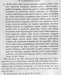

Click on images to enlarge
{kind=link}

Fig. 1: Paropsis carpentariae, description
Name
Paropsis carpentariae Blackburn, 1897
Corresponds to
There are several species within the bicolora-group of species that for the most part fit Blackburn's description. The indicated size and type locality for the species suggest it may be Ta61, a species with a wide distribution in Queensland and northern New South Wales. Though usually with black markings on the prothorax, specimens of Ta61 from far northern Queensland tend to lack these, as Blackburn describes for his carpentariae type. Females tend to have more transverse pronotums than males, though the figure that Blackburn gives as his length/width ratio (2⅔:1) is a little above the measured range of values for Ta61 females of 2.34-2.55 (n=5). However, Blackburn's pronotum ratios tend to be on the high side for many species.
Diagnosis and Notes
Blackburn (1897) deals with P. carpentariae as part of his 'subgroup iv' (i.e., those species without "strongly marked characters", and whose greatest height is considerably in front of the middle of the elytral margin). Within that group, he characterises it as:
AA. Prothorax not (or scarcely) explanate at the sides;
BB. The verrucae unpunctured or nearly so;
CC. Elytra having a sharply defined discal transverse wheal-like ridge;
D. The discal ridge of dark colour;
E. Prothorax very strongly transverse, with strongly rounded sides.
Type specimen
Not examined.
Original description
Translation of original description (Figure 1) by ChatGPT, 04/2026:
♀. Moderately broad, very convex, the greatest height (seen from the side) situated before the middle of the elytral margin; rather less shining; pale ferruginous; with two spots on the head, and with several indistinct marks on the prothorax, elytra, and sterna, and with the verrucae and streaks of the elytra darkened or pitchy. Head rather strongly and rather closely punctured. Prothorax broader than long in the ratio of about 2⅔ to 1, widened from the apex to somewhat beyond the middle, not transversely impressed behind the apex, furnished with four rather distinct transverse verrucae, strongly and somewhat rugosely punctured, the sides strongly rounded and scarcely flattened, the posterior angles rounded. Scutellum punctured nearly as the prothorax. Elytra not depressed beneath the humeral callus, transversely impressed behind the base, the impressed part posteriorly bounded by a raised elongated transverse ridge; rather strongly but less closely, somewhat in rows, punctured (towards the sides a little more strongly, posteriorly a little less strongly), furnished with rather numerous verrucae (some of these resembling short transverse streaks); the interstices not rugulose; the marginal portion rather broad and moderately distinct from the disc by a continuous groove; the inner margin of the humeral callus slightly farther from the suture than from the lateral margin of the elytra. Basal ventral segment somewhat coarsely but rather sparsely punctured. Length 2⅘ lines (~5.9 mm) , width 2 lines (~4.2 mm).
References
Blackburn, T. 1897, "Revision of the genus Paropsis. Part II", Proceedings of the Linnean Society of New South Wales, vol. 22, 166-189 (page 178).
Copyright © 2026. All rights reserved.